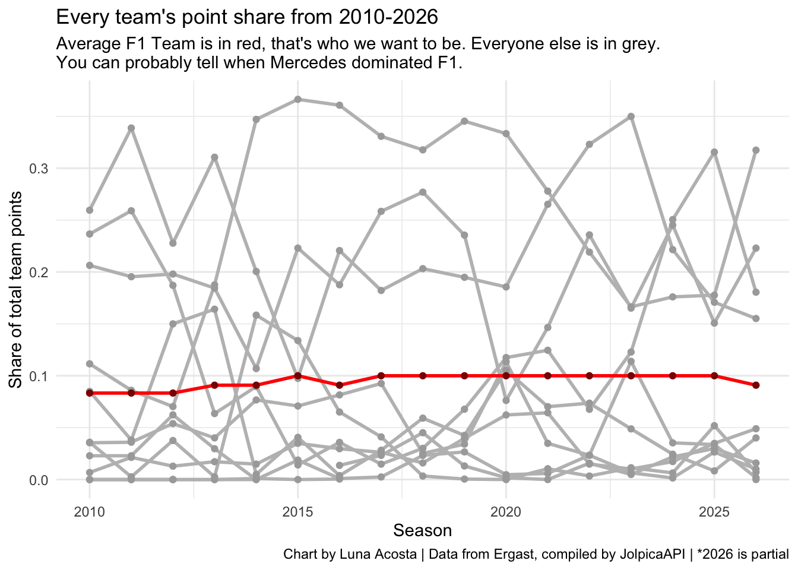
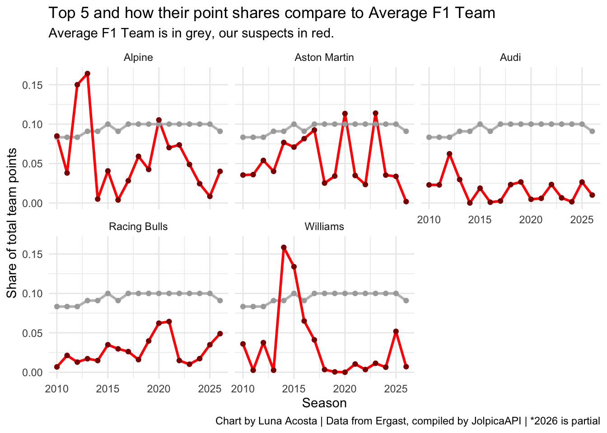
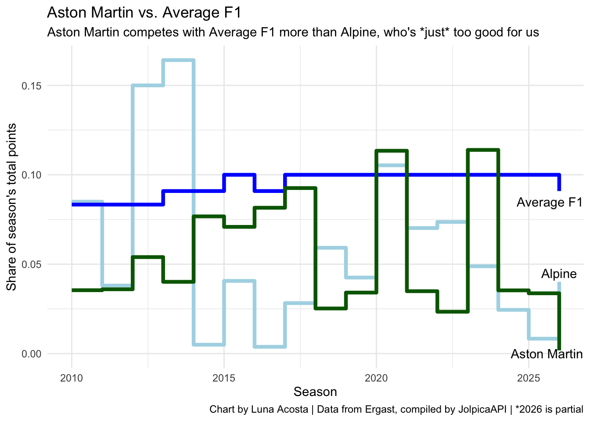

Code
library(tidyverse)Luna Acosta
November 13, 2026
The last 15 years or so have been dull for Formula One.
Red Bull dominance. The Mercedes dynasty. Verstappen terrorizing the podium every weekend. These are stories you’ve heard so much of and stories you are almost certainly tired of.
Granted, there have been years where they action got intense. 2012’s fight between Ferrari and Red Bull. Verstappen and Hamilton fighting to the bitter end in 2021. Even then, those stories become few and far in-between.
Well I, for one, think it’s time we start looking elsewhere.
I no longer care for the McLarens, Mercedes and Red Bulls of the world. Seven drivers championships for Lewis Hamilton? Great. Lando Norris brought McLaren back from the dead? Wonderful. I don’t care.
What I want is a team that’s so good at just being there.
They simply exist. No championship contenders, no teams that probably wish they never took to the track (sorry, Caterham). I just want the best Formula One team to do what they were expected to do.
Let’s go find our team.
We’ll take data from 2010-2026 using this dataset compiling several datasets which track everything from constructors, point totals, circuits, even telemetry data. JolpicaAPI is the one to thank for compiling all the data from Ergast.
For our ideal team, we’ll call them Average F1 Team just to make things simple. Remember, they are perfection. They are the team we want our final team to be.
Furthermore, we’ll merge current teams with their previous names to keep things simple. For example, Racing Bulls will include Toro Rosso and AlphaTauri, Aston Martin will include Force India and the pink-clad Racing Point (maybe the only memorable thing about Racing Point) and Audi will include its history as Sauber/Alfa Romeo/the ugly green thing known as Kick Sauber.
Let’s start by graphing every team’s share of total team points from each season. This allows us to account for changes in the points system and avoid difficult questions, such as “Why did the FIA award double points in Abu Dhabi in 2014?”
standings_prename <- read.csv("data/archive/constructor_standings.csv")
constructors <- read.csv("data/archive/constructors.csv")
races <- read.csv("data/archive/races.csv")
races_clean <- races |>
mutate(date = ymd(date), year = year(date)) |>
select(raceId, name, date, year)
constructors_names <- constructors |>
select(constructorId, constructor = name)standings_full <- standings_prename |>
left_join(constructors_names |> select(constructorId, constructor), by = "constructorId") |>
left_join(races_clean |> select(raceId, name), by = "raceId") |>
left_join(races_clean |> select(raceId, date, year), by = "raceId") |>
rename(race = name) |>
select(points, position, constructor, race, date, year)These few chunks of code are gonna join databases together based on constructor and race ID. In the original databases, they are separated by numerical IDs. We can make things easier through left joins, because they make things much simpler for our purposes.
These chunks of code will combine teams with their previous names. Teams like Audi and Racing Bulls have undergone several name changes that we’ll have to account for. Kudos to Mercedes, Ferrari and McLaren for keeping things simple.
averagef1team <- team_points_share |>
group_by(year) |>
summarize(
avg_share = mean(share)
)
ggplot() +
geom_line(data = team_points_share, aes(x = year, y = share, group = team), color = "gray", linewidth = 1) +
geom_line(data = averagef1team, aes(x = year, y = avg_share), color = "red", linewidth = 1) +
geom_point(data = team_points_share, aes(x = year, y = share), color = "darkgray", size = 1.5) +
geom_point(data = averagef1team, aes(x = year, y = avg_share), color = "darkred", size = 1.5) +
labs(x = "Season", y = "Share of total team points",
title = "Every team's point share from 2010-2026",
subtitle = "Average F1 Team is in red, that's who we want to be. Everyone else is in grey. \nYou can probably tell when Mercedes dominated F1.",
caption = "Chart by Luna Acosta | Data from Ergast, compiled by JolpicaAPI | *2026 is partial") +
theme_minimal()
Red is the perfect line. They are Average F1 Racing, and they’ve probably seen “just ok” drivers come and go.
A few things to note: the 2026 data available brings us up to the Azerbaijan Grand Prix. We could very well see Average F1 team move up the ranks now that Kimi Antonelli has locked in the World Driver’s Championship. Good for him! Unfortunately, he and Mercedes are too good for what we’re doing.
Now I had to remove certain teams, such as HRT, Virgin and Lotus, because their existence does mess with the totals. They’re also just bad. Sorry.
That filter returns five teams that could be Average F1 Team, or at least very, very close: Aston Martin, Alpine, Racing Bulls, Williams and Audi.
Again, this is based off the points share that team had at the end of the season. Those five teams are the closest matches we have, they are now in the race for perfection.
This also includes all their previous teams: for example, Racing Bulls will include Toro Rosso and AlphaTauri, Aston Martin will include Force India and the pink-clad Racing Point (maybe the only memorable thing about Racing Point) and Audi will include its history as Sauber/Alfa Romeo/the ugly green thing known as Kick Sauber.
This filter allows us to make this facet wrap a little easier, taking the yearly progression of each of our five candidates. For example, we can include Lotus (now Alpine)’s 2012 run, where things got a little too exciting our purposes. Kimi Raikkonen was doing excellently, Romain Grosjean was the first driver in 18 years to get a race ban. Fun stuff, but it puts Alpine on thin ice. We can’t do fun here.
ggplot() +
geom_line(data = averagef1team, aes(x = year, y = avg_share), color = "gray", linewidth = 1) +
geom_line(data = facet_data, aes(x = year, y = share, group = team), color = "red", linewidth = 1) +
geom_point(data = averagef1team, aes(x = year, y = avg_share), color = "darkgray", size = 1.5) +
geom_point(data = facet_data, aes(x = year, y = share, group = team), color = "darkred", size = 1.5) +
facet_wrap(~team) +
labs(x = "Season", y = "Share of total team points",
title = "Top 5 and how their point shares compare to Average F1 Team",
subtitle = "Average F1 Team is in grey, our suspects in red.",
caption = "Chart by Luna Acosta | Data from Ergast, compiled by JolpicaAPI | *2026 is partial") +
theme_minimal()
Sorry, Racing Bulls, Williams and Audi. You guys are just too bad for our ranking. Williams could’ve had a fighting chance if they had more fluctuation, but their run from 2018-2024 was influenced by the graces of Nicholas Latifi and Logan Sargeant, two drivers who lacked in pace but exceeded marks when it came to memes.
However, we may have found our target. Enter Aston Martin.
Remember that the closest_teams filter provided us with five teams based on one thing: how far they were from the point share earned by Average F1.
Out of our top five, Aston Martin ranked number one, beating Alpine by one hundredth. You’ll also notice that they follow Average F1 more than the latter, thanks to Alpine being pretty dang good in 2012 and 2013 and pretty dang awful in 2014 and 2016 during the Renault resurgence.
This means that despite the flashes of brilliance from Sergio Pérez, the promise of veteran strength provided by former world champion Fernando Alonso (or maybe despite Lance Stroll), Force India/Racing Point/Aston Martin has proven to be the most average F1 team we have on the grid.
Let’s explore this even further.
In this step chart, we are gonna compare Aston Martin’s points share progression from 2010-2026 to Average F1. No team’s perfectly average, no matter how much I wish a team could be, so the British squad could out-compete Average F1 in certain years.
However, the chart will show just how close to perfection AM has gotten over the last 16-ish years.
I’ll even throw in Alpine, our second-place candidate, just so I can show you how close this was.
ggplot() +
geom_step(data = alpine_average, aes(x = year, y = share), color = "lightblue", linewidth = 1.5) +
geom_step(data = averagef1team, aes(x = year, y = avg_share), color = "blue", linewidth = 1.5) +
geom_step(data = aston_average, aes(x = year, y = share), color = "darkgreen", linewidth = 1.5) +
annotate("text", x = 2025.7, y = 0.085, label="Average F1") +
annotate("text", x = 2026, y = 0.045, label="Alpine") +
annotate("text", x = 2025.6, y = 0.0, label="Aston Martin") +
labs(x = "Season", y = "Share of season's total points",
title = "Aston Martin vs. Average F1",
subtitle = "Aston Martin competes with Average F1 more than Alpine, who's *just* too good for us",
caption = "Chart by Luna Acosta | Data from Ergast, compiled by JolpicaAPI | *2026 is partial") +
theme_minimal()
Alpine, if your Lotus outfit was just a tad bit worse from 2012-2013, you would’ve won the award for the team closest to perfection. One thing you do have over Aston is that you were nearly right on the mark in 2011.
Alpine, almost always there, story of their Lotus life. Not so much now, much to the chagrin of the French fanbase.
Aston beats Alpine in consistency. Their points shares between the 2014 and 2017 seasons match that of Average F1 better than any other team on the grid. Even when they went up and down in the early 2020s, they were near the mark more times than Alpine.
It’s not perfection. Perhaps with a sport as volatile as motorsport, we may never get that average perfection we’re looking for.
But the team clad in beautiful British Racing Green, the team that spent years fighting for an identity (and nearly found one with the success of Checo), instead sat exactly where we wanted a team to be.
Aston Martin is the most average F1 team since 2010.